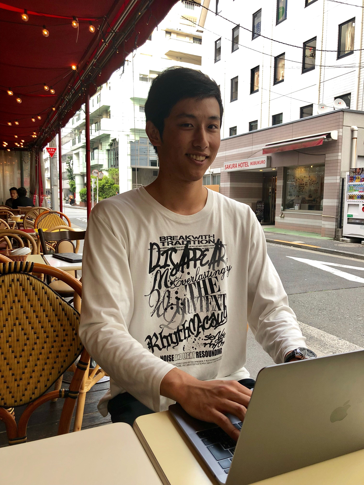

D.Tさん(22歳 大学生)
Q. なぜプログラミングに興味を持ったんですか？
建設工学を大学で専攻していたのですが、自分から学ぼうと思えず、学ばされている感覚で受け身になっていたんです。 インターンや今後の進路を考え始めた時に不安になってプログラミングを勧められ、今後エンジニアが重宝される事や手に職をつけた方がいいと感じました。 ちょっと独学をしてみて面白いと思って本格的に学ぼうと思いスクールに通うことにしました。
Q. プログラミングの好きなところはどんなところですか？
コードを書いて、ちゃんと動いた時に楽しいし嬉しいです。
Q. 他のプログラミングスクールと比較しましたか？
してません。正直プログラミングスクールがそんなにたくさんあると思っていなかったんです（笑）。
Q. Code Villageを選んだ理由はなんですか？
スパルタ教育なところがちゃんと自分自身に強制的に自学習を課せられると思い即決しました。最終的にサイト作成とかの目標も立てて挑みました。
Q. 授業の雰囲気はどうでしたか？
プログラミングって一人でひたすらカタカタしてるイメージだったんですけど集団授業ということもあり、想像よりも明るい雰囲気でした。
Q. 講師はどうでしたか？
分かりやすくて、分からないところも解決しやすかったです。今後のキャリアなどの相談にものってもらえたのもよかったです。
Q. カリキュラムの内容やレベルはどうでしたか？
独学を始めるまでは必要最低限のパソコンを使えるレベルだったので、独学し始めた時は難しいと感じましたけど、今思えば簡単だったと思います。それも独学である程度学んだ後だったのでそこまで難しく感じなかっただけだとは思います。自学習でかなり努力もしていました。
Q. どのくらいのレベルまで出来るようになりましたか？
web系のチャットアプリを作りました。 HP作成はデザインが飛んでくれば簡単に作れると思います。 僕は見た目よりも中身を作るのが好きですね。
Q. 自学習時間の確保は大変ではありませんでしたか？
プログラミングの勉強が楽しかったので、全然苦にならなりませんでした。
Q. プログラミングのどんなところが好きですか？
やる前とのギャップが大きくて好きになりました。 基礎から学ぶことによってよく見るwebサイトの仕組みがわかってきて、すごく身近にあるものだと思って更に楽しくなりました。 しかもそれを自分でも作れるようになっていったのが楽しかったです。 実際にコードを書いてちゃんと動いた時やエラーが解決できた時はスッキリして本当に楽しいんです。
Q. 働いていて自学習時間が取れない人にとっては難しいカリキュラムだったと思いますか？
結構難しいかもしれないですが、本人のやる気次第で2時間/日くらい確保できれば問題ないかと思います。
Q. どのくらい自学習しましたか？
平日３−4時間、土日6時間は自学習してました。予定があったり忙しくても2時間/日は絶対にやっていました。
Q. 苦労した点はありますか？
授業中のわからない点はその場で聞けたんですけど、自学習中にわいた分からない点を解決できなくて大変でした。もちろん、できる限り自分で調べてからですが、質問ができる仕組みがあれば良かったなと思います。(*)
(*現行のカリキュラムでは、オンラインで質問出来るシステムを完備しております。)
Q. Code Villageならではの魅力はどんなところだと感じましたか？
一番は自学習を強制化してくれたところが大きいです。自学習をしなければカリキュラムについていけないので危機感を持って取り組めました。相談しやすい人間関係も支えとなりました。
Q. Code Villageに通って得たこと(技術以外で)はありますか？
自学習能力がつきました。あとは、学習の習慣付けが出来るようになりましたね。
Q. 挫折しそうになったことがありますか？
最初に独学でやっていた時に無理だなって感じた事もありますが、受講し始めて基礎から適切なプロセスを学べて乗り越えることができました。
Q. どのくらい自学習しましたか？
授業の日の授業前に集中的に時間を作るようにして、他の日も夜やっていました。忙しくても必ず毎日パソコンを開く習慣をつけていました。平均したら1日に2時間ですが、多い日は5時間くらいは自学習していました。
Q. これからのキャリアについてどのように考えていますか？
元々は公務員志望だったんです（笑）。安定しているからと言う理由だけだったんですけどね。 今はIT業界に絞っていて、web系にいきたいと思っています。 フロントエンドとバックエンド両方学んでみた結果、バックエンドのスペシャリストになりたいと思いました。 将来的にはフリーランスやフルリモートの会社で働きたいと思っています。
Q. フリーランスやフルリモートは安定とはかけ離れているのでは？
安定を確保するために始めは就職してスキルと実務経験を積んでいきたいと思っています。
Q. 起業に興味はありますか？
起業したいとは思ってないです。 作り上げることがやっぱり好きなので、スタートアップベンチャーで働きたいとは思います。
Q. これからプログラミングを勉強しようとしている人に一言ください。
一番大変なのは最初だと思います。
プログラミングはなんなのかから始まって行くと思うので、そこが分からなくなるとこんがらがってつまずくかもしれないです。
ただ、そこでつまずいても諦めないでほしいと思います。
絶対できるようになるので、多少つまずいても、めげずにとにかく続けてみてほしいです！